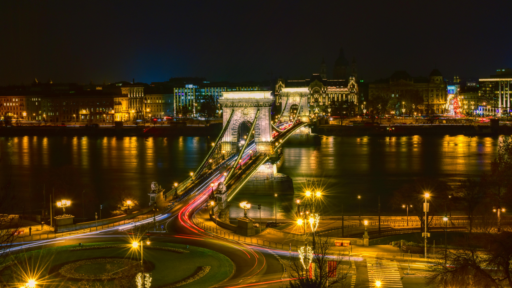
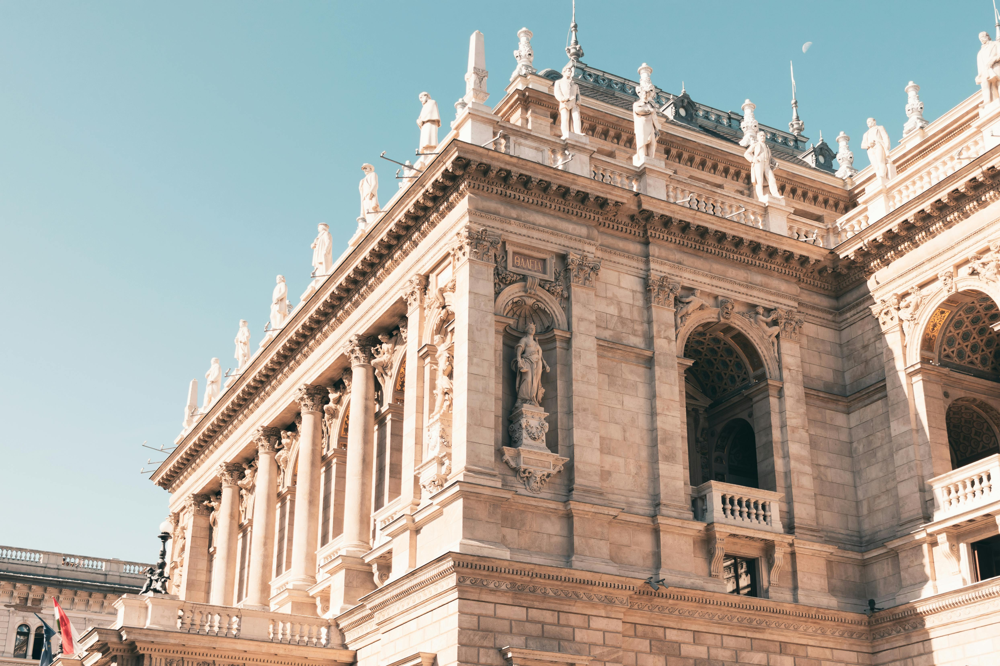
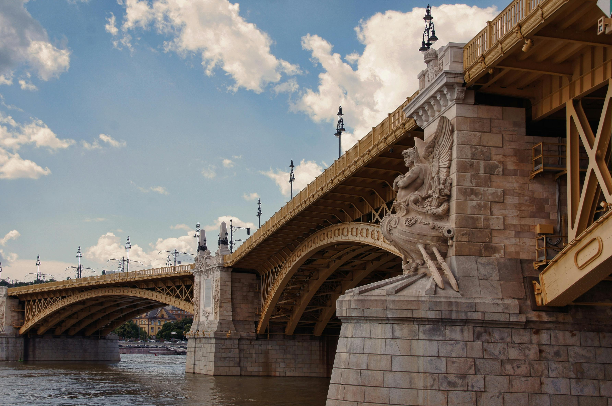
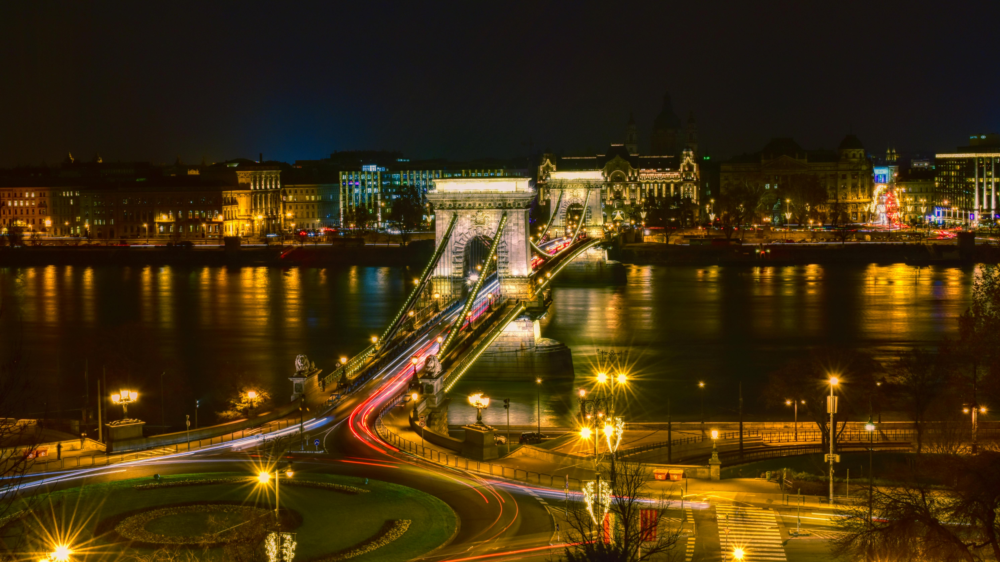
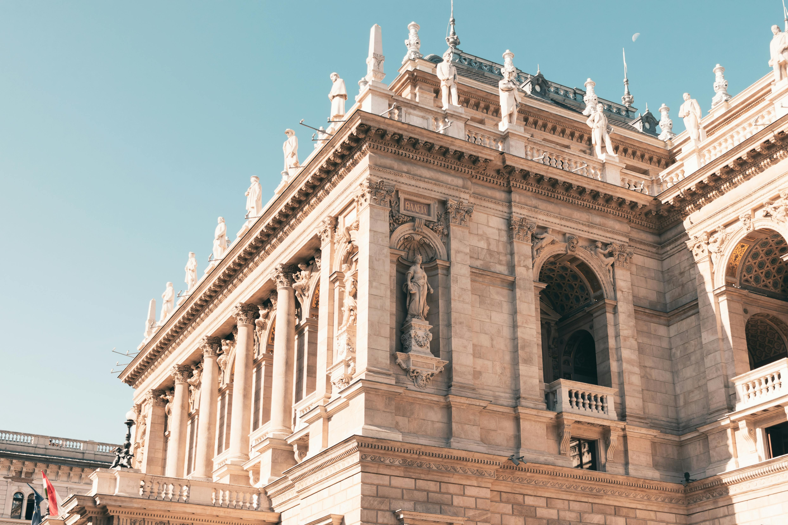
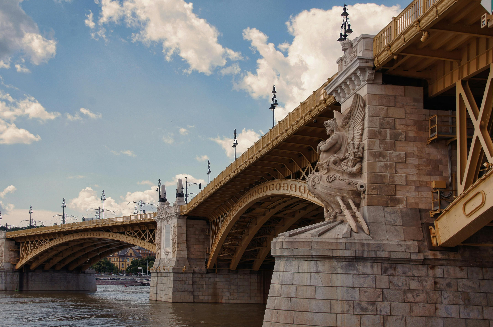

Budimpešta, glavni grad Mađarske, jedno je od najljepših i najživopisnijih mjesta u Europi, smještena na obalama moćnog Dunava koji dijeli grad na dva dijela – Budim i Peštu. Povijesno bogata i kulturno raznolika, Budimpešta je destinacija koja očarava svakog posjetitelja svojom arhitekturom, poviješću i autentičnom atmosferom. Grad se ponosi impresivnim znamenitostima poput veličanstvenog parlamenta, jedne od najpoznatijih građevina u Europi, kao i povijesne Budimske tvrđave koja pruža spektakularne panoramske poglede na grad i rijeku. Šetnja preko slavnih mostova poput Lančanog mosta otkriva duh prošlih vremena i povezuje šarmantne brežuljke Budima s užurbanom energijom Pešte. Osim povijesnih spomenika, Budimpešta je poznata i po svojim termalnim kupkama, bogatoj gastronomskoj ponudi te živopisnim tržnicama. Njene ulice odišu atmosferom koja spaja staro i novo, gdje se povijesne zgrade stapaju s modernim kafićima, galerijama i trgovinama. Prilikom posjeta ovom čarobnom gradu, planirala sam detaljno istražiti njegove znamenitosti, uroniti u lokalnu kulturu i iskusiti nezaboravne trenutke koji čine Budimpeštu jednom od najposebnijih prijestolnica na svijetu.

Vikend u Budimpešti
1. Dan: Četvrtak, 19. prosinca
10:00 - 14:00: Polazak iz Zagreba autobusom. Dolazak u Budimpeštu, check-in u apartman.
15:00 - 16:30: Odmor i preslušavanje audio vodiča:
17:00 - 19:00: Posjet Trgu heroja i šetnja Andrássy avenijom idealan je način za upoznavanje povijesnog i modernog duha Budimpešte. Trg heroja, s impozantnim Milenijskim spomenikom i kipovima povijesnih mađarskih vođa, jedno je od najpoznatijih mjesta u gradu. U blizini se nalaze Muzej lijepih umjetnosti i Palača umjetnosti, koji nude jedinstvenu priliku za ljubitelje umjetnosti i kulture. Nastavljajući Andrássy avenijom, koja je pod zaštitom UNESCO-a, može se uživati u pogledu na elegantne palače, luksuzne trgovine i kazališta, uključujući i slavnu Mađarsku državnu operu. Zatim katka pauza u nekom od tradicionalnih kafića duž avenije kako bi se kušale lokalne slastice, poput dobos torte. Šetnja se može završiti na Trgu Oktogon, poznatom po svojoj užurbanoj atmosferi i modernim barovima, savršenim za opuštanje nakon dana punog istraživanja.
 





2. Dan: Petak, 20. prosinca
09:30 - 12:00: Posjet Parlamentu i šetnja preko Lančanog mosta. 14:30 - 17:00: Razgledavanje Budimskog dvorca i Ribičke tvrđave. 21:00 - 22:00 Večernja plovidba Dunavom uz čašu prosecca idealan je način za opuštanje nakon dana punog istraživanja. Tijekom ove vožnje, može se uživati u spektakularnim panoramskim pogledima na najpoznatije znamenitosti Budimpešte, uključujući osvijetljeni Parlament, Budimsku tvrđavu i Lančani most. Atmosfera je čarobna, s odsjajem svjetala na vodi, što pruža nezaboravan doživljaj. Prosecco i lagana glazba stvaraju savršenu kombinaciju za romantičan završetak večeri ili ugodno druženje s prijateljima.
3. Dan: Subota, 21. prosinca
09:30 - 12:00: Kupovina na Velikoj tržnici.
14:30 - 16:00: Brzi posjet Széchenyi termama.